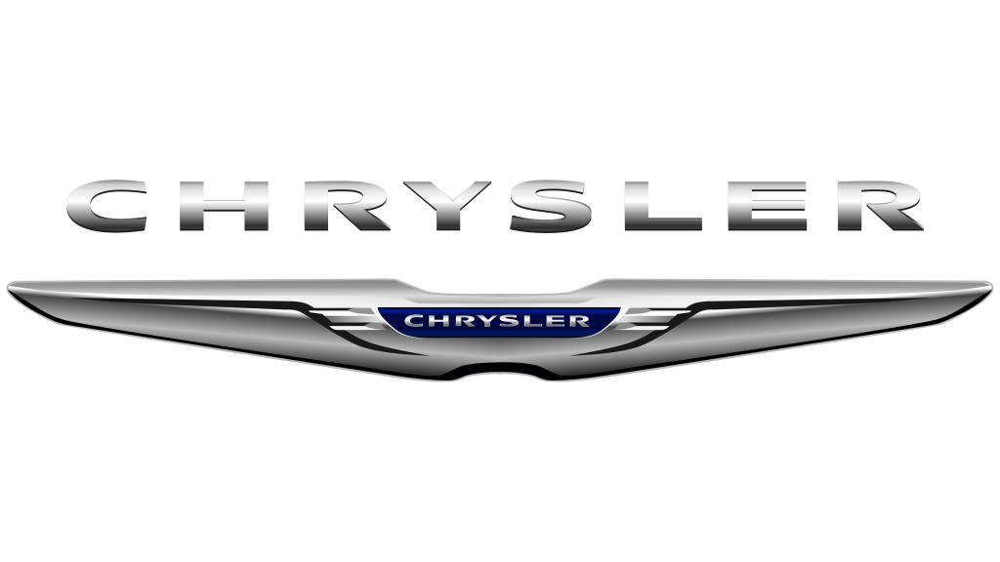
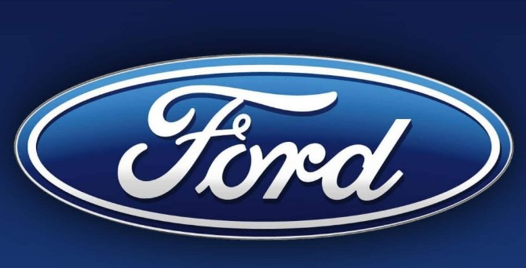

Currently, we have collected a total of 383 car brands.

The automotive industry has experienced some incredible growth over the past couple of years. In the US alone, more than 30 automotive brands vie for the more than 17 million cars and trucks that are sold each year. Around the world, there are even more brands selling everything from tiny economy cars to million-dollar exotics for the world's plutocracy. But the industry is highly consolidated — a handful of major corporations own nearly all of the world's major car brands. This graphic does not include every car company and every brand. Instead, it's meant to be a visual representation of the amount of influence and market power held by a handful of very powerful companies. As a result, well-known names such as McLaren, Mazda, Subaru, and Tesla have not been included because they do not belong to a large car making conglomerate. Ferrari does not appear because it's been spun off from FCA and floated on the New York Stock Exchange. dr
How many well-known car logos and names could you name off the top of your head? Ford, BMW, Bentley, and many other automakers have all developed increasingly recognizable emblems throughout time. Every automobile brand has a distinctive logo, whether the opulent Aston Martin badge or the understated Volvo one. These logos’ distinctive visual appeal is essential for drawing in clients. Car logos and names are much more than marketing collateral for today’s motorheads and automobile fans; they have become symbols of prestige and character. Car owners, employees, and enthusiasts are urged to don lapel pins and cufflinks with brand logos. Some car emblems are so highly valued that theft has even been considered a last resort.
 Lets name a few, Chrysler Few well-known auto insignia are as sleek and elegant as the one for Chrysler. The Kruessler crest inspired the Chrysler emblem, a well-known element of the Stellantis brand, which was given wings to represent excellence in the 1930s. Even though Chrysler has experimented with the “Pentastar” logo and other shapes throughout the years, it seems that the business consistently returns to its wings. The Chrysler logo is now a representation of grace and refinement.
 Now we have Ford. According to legend, one of the pioneering businesses in the auto industry is Ford. Ford’s car brand logos have mostly stayed the same over the years, but its simplicity makes it simple to identify the corporation wherever you are. Since 1927, the blue oval has been a part of the Ford automobile logo.Childe Harold Wills, the chief engineer at Ford, reportedly modeled the script o f the automobile symbol, written in white to represent purity and clarity, on the signature of Henry Ford, the man who founded the firm.